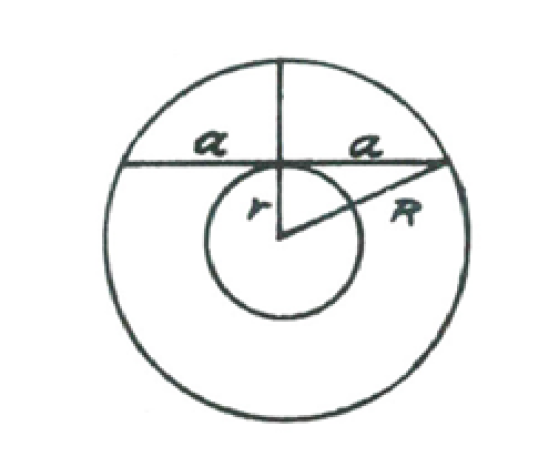
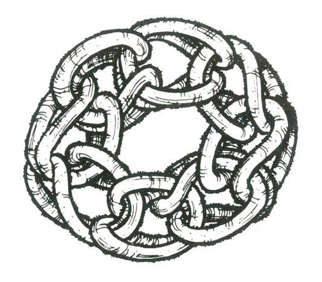
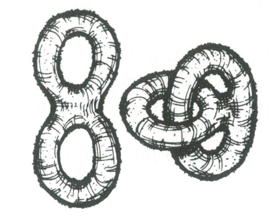
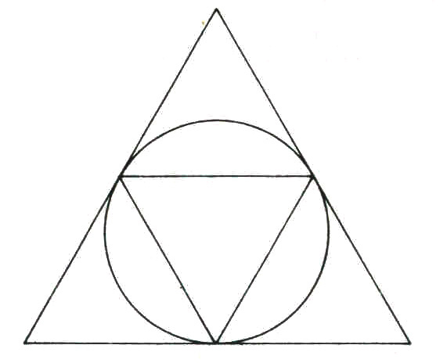
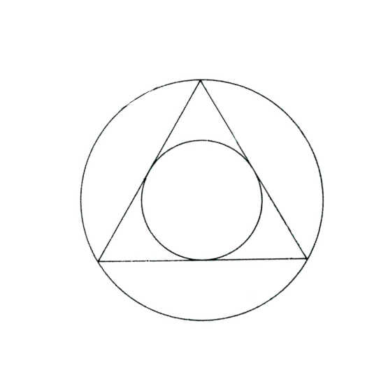
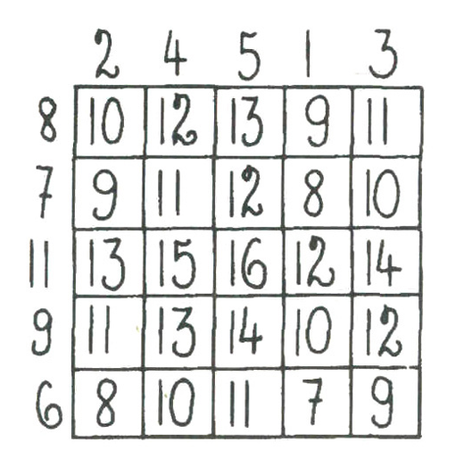
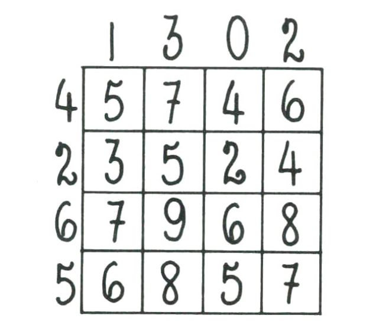
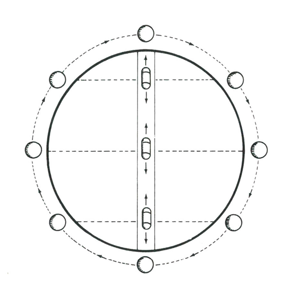
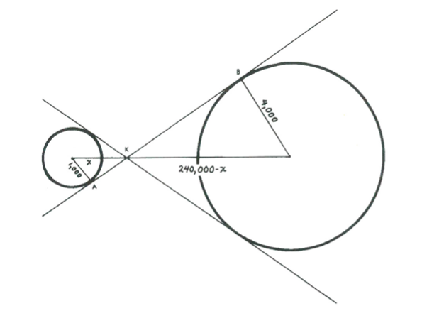

1
Dr. Ziege Kapra’nın güney kutbuna yaklaşık 11,59 mirametre mesafedeki bir çemberin herhangi bir noktasından yola çıkmış olabilirdi. Güneye 10 mirametre gittiğinde kutba 5/π mirametre mesafede bir noktaya ulaşacaktı. Ardından 10 mirametre doğuya gitmesi kutup etrafında tam bir daire çizmesini sağlayacak, 10 mirametre kuzeye gittiğindeyse başladığı noktaya dönmüş olacaktı.
Kurtarma ekibi Dr. Ziege ve asistanlarını tam Felix’in öngördüğü noktada ve tam zamanında buldu. Dünya’ya dönerken Hilda birdenbire Kapra’da Dr. Ziege’nin yola çıkmış olabileceği üçüncü bir noktanın bulunduğunu fark etti. Siz bulabilir misiniz bu noktayı?
2
Birinci çift eldivenin içine 1A, dışına 1B diyelim. İkinci çift eldivendeyse 2A ve 2B kullanalım.
Dr. Ksenofon ameliyata girerken iki çift eldiveni birden (ikinci çifti birinci çiftin üzerine) giyer. 1A ve 2B yüzeylerine mikrop bulaşabilirken 1B ve 2A steril kalır. Ardından Dr. Upsilon ikinci çifti giyer, steril 2A yüzeyleri sayesinde virüsten kurtulur. Daha sonra Dr. Zeno ilk çifti tersyüz ederek giyer. Steril 1B yüzeyleri sayesinde virüsü almaz.
Yalnız ameliyatlar bittikten sonra hemşire Bayan Frisbie çok kızmıştı. “Kendinizden utanmalısınız! Hepiniz! Kendinizi korudunuz ama zavallı Bayan Hooker’ı unuttunuz! Dr. Ksenefon’da grip virüsü bulunsaydı Bayan Hooker, Dr. Upsilon’un giydiği eldivenlerden kapacaktı.”
“Yani, bunu önleyebilirdik mi diyorsunuz Bayan Frisbie?” dedi Dr. Zeno.
“Aynen öyle diyorum!”
Ardından Bayan Frisbie üç şaşkın cerraha sadece birbirlerinden veya Bayan Hooker’dan virüs kapmalarını engellemekle kalmayıp Bayan Hooker’ın da kendilerinden kapmasını engelleyecek yöntemi açıkladı. Neydi peki bu yöntem?
3
Matematikçiler buna “Diyofantus problemi” derler. Bir Diyofantus denklemi, tamsayı değerlerle çözülmesi gereken cebir denklemidir. Buradaki vakada denklem şöyledir:
x (x+1)(x+2) = y(y+1)
6 2
Sol taraftaki ifade dörtyüzlüsel sayıları, sağdakiyse üçgenselleri belirtir; x ve y değerleri pozitif tamsayılar olmak zorundadır. İki çözümü zaten biliyoruz:
x = 1, y = 1
x = 3, y = 4
İki çözüm top sayısı için 1 ve 10 değerlerini verir. Sonraki çözümse şöyledir:
x = 8, y = 15
ki bu da uzay bilardosunda kullanılan toplar için 120 değerini verir. 120 sekizinci üçgensel ve on beşinci dörtyüzlüsel sayıdır.
Sadece iki çözüm daha var:
x = 20, y = 55
x = 34, y = 119
Bu çözümler top sayısı olarak 1.540 ve 7.140’ı verir. Beş çözümün beşi de on dokuzuncu yüzyıl sonlarında biliniyordu ama başkasının bulunmadığı ancak 1967’de, bir Rus matematikçi tarafından kanıtlandı. Kanıtı epey zorluydu.
Başlangıçta topların üçgen değil, bir kare içine dizildiklerini varsayalım. Öncekindeki gibi, uzay bilardosu gene aynı top setiyle, dörtyüzlü bir düzende başlayacak. Başka bir deyişle, hem dörtyüzlüsel hem karesel bir sayı bulmanızı istiyoruz.
İki çözüm, 1 ve 4. Sadece bir tane daha var. Bulabilir misiniz acaba?
4
İmparatorun planı işe yaramayacaktı.
Tüm ilk doğan bebekleri düşünün. Üçte biri erkek, üçte biri kız ve üçte biri çift cinsiyetli olacak. Çift cinsiyetlilerin anneleri kısırlaştırılacak.
Kalan anneler ikinci defa bebek doğurabilecek. Doğacak bebeklerin üçte biri erkek, üçte biri kız ve üçte biri çift cinsiyetli olacak. Gene çift cinsiyetlilerin anneleri kısırlaştırılacak.
Kalan anneler üçüncü defa bebek yapabilecek ve böyle devam edecek. Bu durumun her boyuttaki aileye genelleneceği açık. Cinsiyet oranları daima 1:1:1 olacaktır.
Çıkan yasanın bin yıl yürürlükte kaldığını ve tüm annelerin bu süre boyunca, çift cinsiyetli bebek doğurana kadar hayatta ve sağlıklı kaldıklarını varsayalım. Bin yıllık süre içinde bir Byronialı annenin ortalama kaç çocuğu olurdu?
5
Söz konusu algoritma modulo iki sayı sistemini kullanıyor. İlk kutudan 1, ikinciden 2, üçüncüden 4, dördüncüden 8, beşinciden 16 ve altıncıdan 32 doyl alınıyor. 1, 2, 4, 8 diye giden bu sayılar 2’nin kuvvetleridir ve toplamları olan 63’e kadar tüm tamsayılar bu kuvvetlerin (her birinin en fazla bir defa kullanılması kaydıyla) toplamlarıdır.
Bir doylun bir gram olması gerektiğinden alınan 63 doyla bir teraziye konduğunda çıkan fazladan ağırlığın sayısı modulo iki yazılır. Çıkan sayıdaki 1’ler, sağdan saymak kaydıyla, bozuk doylların bulunduğu kutuları gösterecektir. Örneğin 22 gram fazla ağırlık çıktı diyelim. Modulo iki sistemde 22, 10110 diye yazılır. Bu durumda hatalı doyllar ikinci, üçüncü ve beşinci kutuda bulunuyor demektir.
Birkaç ay sonra üçüncü teslimatın ardından yeni bir mesaj geldi: “Bir bilgisayar hatası yüzünden her kutuya sadece iki düzine doyl doldurulmuştur. Kutulardan herhangi birisi, her biri bir miligram fazladan ağırlığa sahip hatalı doyllarla dolu olabilir. Lütfen hatalı doylları bulup imha ediniz.”
“İkili sistem bu sefer işe yaramayacak,” dedi Wats. “Kutulardan birisinde 32 doyl olmasını gerektiriyor. Ama kutuların hiçbirinde o kadar yok.”
Sherl yanıt vermedi. Odasına kapandı, koluna kişinin kitap sayfalarının kenarlarına sayılar kuramı karalamaları yapma gücünü artıran Fermatain ilacını zerk etti ve bir süre müzikal testeresini gıcırdattı… Arkadaşının yanından döndüğünde şunları söyledi:
“Buldum, Wats. Tek tartış yeterli. Eşsiz bir çözüm…”
Neydi peki bu çözüm?
6
Soru, olayda zamanı tersten alarak kolayca çözülebilir. Söz konusu kap eğer 50 saatte dolmuşsa, 1/7’si 49 saatte dolmuş demektir.
Kolaydı bu. Ama bir de daha zorunu düşünelim. Diyelim ki Dr. Moreau III kaba 1 yerine 7 mikrop koymuş olsun. Bu durumda kabın 1/7’si kaç saatte dolardı?
7
Leo ilginç teoremini temel grafik teorisinden yola çıkarak kurmuştu. Peçetenin üzerine n kişilik grubu temsilen n miktarda nokta yapmıştı. Bu durumda her el sıkış iki noktayı birleştirilen bir çizgiyle gösterilebiliyordu. Bu durumda insanlardan hoşlanmayan noktalarda herhangi bir çizgi bulunmayacak, bazılarında tek, bazılarındaysa pek çok çizgi olacaktır. Bazı nokta ikilileri, defalarca tanıştırılmak yüzünden birden fazla çizgiyle birbirlerine bağlanacaklardır. Leo’nun teoreminin, temel grafik teorisinin ne kadar çizgi çizilirse çizilsin tek sayıda çizgiye sahip noktaların sayısının çift sayı çıkacağı değerlendirmesiyle eş olduğu açıktır.
Kanıtını sunalım: Herhangi bir noktadan çıkan çizgi sayısına o noktanın “skoru” diyelim. Çift sayılı skora sahip bir nokta “çift nokta” ve tek sayılı skora sahip bir nokta da “tek nokta” olsun. Her çizgi iki noktayı birleştirdiğinden tüm noktaların toplam skoru çift olmak durumundadır.
Çift noktaların toplam skoru da çift olmak zorundadır çünkü hangi sayı bir çift sayıyla çarpılırsa çarpılsın sonuç daima çift çıkar. Bu skoru, toplam çift skordan çıkardığımızdaysa tüm tek noktaların toplam skorunu buluruz. Çift sayıdan çıkarılan bir çift sayının sonucu çift sayı olacağından, tek noktaların toplam skorunun çift sayı olacağını görürüz.
Geriye son bir adım kalıyor. Sadece çift bir sayıdaki tek noktaların skorlarının toplamı çift olabilir. Haliyle tek nokta sayısı da (toplam skorunun çift olduğunu biliyoruz) çift olmalıdır. Öyleyse tek sayılı sefer el sıkışan kişi sayısı çift olmalıdır.
Ling, Leo kanıtını yavaştan anlatırken dikkatle dinlemişti. Birden sırıttı. “Kanıtının, dostum, ortasında kocaman bir kara delik duruyor. Hatta kanıtın düpedüz yanlış. Karşı-örnek derhal aklıma geldi.”
“Ama imkânsız,” dedi Leo. “Kanıtım gayet sağlam. Bir karşı-örnek mümkün değil.”
Ling, örneğiyle Leo’nun kanıtını yerle bir ediverdi. Neydi yaptığı?
8
AC doğrusunun yarısı a, iç çemberin yarıçapı r, dış çemberin yarıçapıysa R olsun.
Bir dairenin alanı pi çarpı yarıçapının karesine eşittir. Bu durumda küçük dairenin alanı πr2, büyüğünkiyse πR2’dir. Halkanın alanı da, iki dairenin alanları arasındaki fark, yani πR2 – πr2 veya π(R2 – r2)’dir.
a ile r, R hipotenüslü dik üçgenin iki kenarı olduğuna göre, a2 + r2 = R2 olacağını (Pisagor teoreminden) biliyoruz. Denklemi a2 = R2 – r2 diye düzenleyebiliriz. Bu bize denklemde (R2 – r2)’nin yerine a2 koyabilme olanağı tanır. Böylece π(R2 – r2) formülündeki iki bilinmeyen, r ve R düşer ve geriye gayet basit πa2 kalır; a = 100.000 kilometre olduğundan halkanın alanı pi çarpı 100.0002 yani 31,415,926,535.89+ kilometrekaredir.
Yüzbaşı Quank hiç konuşmadan bu hesabı yaparken Teğmen Flarp bir sürahi dolusu sek Mars martinisi hazırlamıştı.
“Buldum!” dedi Yüzbaşı. “Halkanın alanı–”
“Söylemeyin,” dedi Teğmen, “bir tahmin edeyim…” Bir zarfın arkasına karaladığı sayıyı kontrol etmek için durakladı. “Alan, 31,415,926,535.89+ kilometrekare.”
“Flarp, bazen feci şaşırtıyorsun beni. Kesinlikle doğru… İyi de, onca hesabı kafadan nasıl yapabildin?”
“Hesap yapmadım. Bana tek gereken pi çarpı dairenin yarıçapının karesi formülüydü. Formülü hiç unutmadım çünkü ilkokulda öğrenip babama söylediğimde, ‘Sizin öğretmen kafayı yemiş oğlum, daire yuvarlaktır, kare değil,’ demişti.”
İkinci soru: Teğmen Flarp problemi nasıl böyle kolayca çözebilmişti?

9
Şekil 2’de istendiği kadar bağlantının eklenebileceği açık bir örnek zincir görülüyor. Halkalardan biri çıkarılırsa hepsi serbest kalacaktır.

Toroit çiftleri nadiren Siyam İkizleri misali birbirlerine yapışık büyürler. Şekil 3’te böylelerine, biri bağlantılı diğeri bağlantısız yapışık iki örnek görülüyor.

İkinci sorumuz: Bu iki biçim topolojik anlamda denk midir? Oluşumları yüzeyin asla kopmaması veya yırtılmaması kaydıyla istediğiniz kadar eğip bükebileceğiniz, çekip uzatabileceğiniz lastik yüzeyler olarak düşünün. Bu tür eylemlerle bir biçimi diğerine dönüştürmek mümkün müdür?
10
Dört pulun değerleri 1, 4, 7 ve 8 olmalıdır.
ABD kolonisinde nüfus arttıkça yeni kubbeler inşa edildi. Kısa süre içinde ilk pul serisini, daha yüksek toplamlar elde edilebilmesi için beşlik yeni bir seriyle değiştirmek gerekti. Tate en iyi serinin 1, 4, 6, 14 ve 15 olduğunu kanıtlamakta biraz zorlandı. Bu pulların bir, iki veya üçüyle 1’den 36’ya kadar toplamlar elde edilebiliyordu.
Birkaç yıl sonra ekonominin daha da büyümesi altı pulluk yeni bir serinin basılmasını gerektirdi. Bu sefer Tate her biri 52 dolar toplama kadar gidebilen sadece iki n tane “en iyi” sekans olduğunu kanıtlayabildi.
1, 3, 7, 9, 19, 24
1, 4, 6, 14, 17, 29
Sonunda yedi pulluk seri basılması şart oldu. Bu noktada en uygun değerler grubunu bulma görevi iyice zorlaşınca Tate, Dünya’daki kombinatorik sayılar kuramı uzmanlarına başvurmak zorunda kaldı. Matematikçiler bu tür sekanslar elde etmeye yarayacak bilinen herhangi bir formül bulunmadığını söylediler ama müthiş ayrıntılı bir araştırma yapıp yedi pulluk en iyi grubu bulan bir yazılım geliştirdiler. Bulunan grubun eşsiz olduğu ve 1’den 70 dolara tüm toplamları verebildiği ortaya çıktı.
Neydi bu sekans?
11
1) Üç robot yasasını formüle eden kişinin soyadı ASIMOV.
2) Güneşe en uzak olandan en yakınına gezegenlerin baş harfleri: P, N, U, S, J, M, D, V, M.
3) Altı harfin üstü karalanarak elde edilen cümle: İİÇARPILARTIİ, Roma rakamları I=1 ve L=50 sayesinde 101 toplamını verir.
4) 4 Temmuz 2000, Yirminci yüzyıla ait bir tarihtir. 21. yüzyıl, 1 Ocak 2001 tarihinde başlamıştır.
5) Şekildeki üçgenin taban uzunluğu 8, kenar uzunlukları 3 ve 5’tir. 5 + 3 = 8 ettiğinden bu düz bir çizgiye dejenere bir üçgendir. Bu çizgide x doğru parçasının uzunluğu 1’dir.
6) Aranan özelliklere sahip tek sayı 735’tir.
7) İster inanın, ister inanmayın, yelkovan on iki saatlik bir zaman dilimi içinde akrebin üzerinden sadece on defa geçer.
NOT
Test elbette şaka amaçlıydı ama pek eğlenceli bulmayan IASFM okurlarını anlamadığımı da söyleyemem. 7. sorunun yanıtına inanmakta zorlanıyorsanız kendiniz deneyip görebilirsiniz.
12
Bu problem ilk defa Cambridge Üniversitesi matematik öğrencilerinin çıkardığı Eureka dergisinde, 1966 Ekim’inde yayınlandı. Cambridge Trinity College’den Profesör D. Mollison’un yanıtı şöyle:
“Bu üç nokta, özellikleri olmayan, gelişigüzel noktalardır. Her birinin kendi sağına (mesela) diğer birine rastlayana dek hareket ettiğini düşünelim. Üç mesafenin de 1 toplamlı aynı oranda dağıtılmış gelişigüzel değişkenler olduklarını, dolayısıyla her birinin ortalama 1/3 olduğunu görürüz.”
Başka bir deyişle Smith ve Jones krater ağzının uzunluğunun üçte birine eş bir mesafe yürümeyi “bekleyebilirler.” Bu elbette uzun vadede tekrarlanan denemelerin ortalamasıdır.
Smith ve Jones ilk ikmal istasyonuna ulaştıktan sonra çantalarına yiyecek depolayıp krateri keşfe koyuldular. İlkin ikmal istasyonundan başlayan düz bir doğrultu üzerinde yürüyüp yine kraterin kenarına ulaştılar. Aldıkları mesafe 5 kilometreydi. Ardından 90 derecelik bir dönüş yapıp yine dümdüz yürüyerek 12 kilometre daha alıp bir kez daha kraterin kenarına ulaştılar.
Kraterin çapı kaç kilometredir?
13
Seksen pembe kol, 40 pembe ve yarısı kadar mavi kol, 20 mavi anlamına gelir. Bu durumda 60 mavi ve pembe var demektir. 81’den 60 çıkarılınca yeşillerin gözleri için 21 kalır.
21 sadece iki şekilde çarpanlarına ayrılabilir: 1 x 21 ve 3 x 7. Ancak soruda 3’ten fazla 12’den az yeşil bulunduğu söylendiğinden yeşil sayısı 7 olmak zorundadır. Kısacası bu gezegendeki üç ırk da üçer göze sahiptir.
İkinci bir problem soralım: bulmacaya dönün, konuşmaları tekrar okuyun ve profesörlerin hangisi hangi ten rengine sahip, bulun.
14
Doğru söyleyen için D, yalancı için Y ve bazen doğru bazen yalan söyleyen için B harflerini kullanalım. Altı permütasyon mümkündür:
Sol Orta Sağ
1 D Y B
2 D B Y
3 Y D B
4 Y B D
5 B D Y
6 B Y D
Soru ve yanıtları her altı dizilişe uygulayarak tekrar inceleyin. Sadece altıncı dizilişte çelişki bulunmayacaktır. Öyleyse soldaki robot bazen doğru, bazen yalan söyleyen, ortadaki yalancı ve sağdaki doğrucu demektir.
Profesör Tinker öğrencisini kutladı. İkinci soru için robot hanımlardan sınıftan çıkmalarını, ardından tekrar gelip sandalyelere, aynı sıra şartı olmadan oturmalarını söyledi.
“Bu robotların hepsi ayrı günlerde yapıldı,” dedi Profesör. “Haliyle içlerinden biri, diğer ikisinden yaşlı. Kim olduğunu üçü de biliyor. Probleminiz, kolyeli robotun en yaşlıları olup olmadığını sadece iki soru sorarak bulmak.”
Öğrenciler kâğıt kaleme sarıldı ve uzun süre sınıftan çıt çıkmadı. Derken sınıfın en zeki öğrencisi Azik İzomorf elini kaldırdı. Nasıl çözmüştü peki problemi?
15
Buradaki oyun, şekilde görülen gibi bir zikzak çizgi üzerindeki her miktarda tek sayıya genellenir. İlk oyuncu, başlangıç noktası hariç nokta sayısı 5 veya 8’in herhangi bir katının 5 ile toplamı olmadığı sürece daima kazanabilir. Bu türde sayıların sekansı şöyle gider: 5, 13, 21, 29, 37…
Bulmacamızdaki oyunda başlangıç dâhil toplam 15 nokta var. 15 sayısı yukarıda verdiğimiz sekansta bulunmadığından ilk oyuncu daima kazanabilir. İlk hamlesinde iki nokta ilerlemek zorundadır. Ardından diğer iki seçenekten birini benimseyebilir (daima birini veya diğerini yapabilir).
1) Hamlesiyle içerideki bir noktada kalacak şekilde oynar ve iki taş arasında1, 8 veya 9 nokta kalır veya
2) Hamlesiyle dıştaki bir noktada yer alır ve iki taş arasında 4, 5 veya 12 nokta kalır.
Bagson oyunu analiz ederken birdenbire pek çok yirminci yüzyıl bulmaca kitabında yer alan ve bir grup taşla oynanan daha basit bir taş-alma oyunuyla eşdeğer olduğunu fark etti. Bu antik oyunla izomorfik, bir avuç çakıl taşı ve bu taşları gruptan alma kurallarından oluşan bir oyun hazırlayabilir misiniz acaba?
16
İhtiyarın ilk fiyatlandırma sistemine şu genel fonksiyonu uyguladım: 1 ile başlayan x sayıdaki ardışık tek sayıların toplamı x2’dir. Örneğin: 1 + 3 + 5 = 9 = 32.
İkinci fiyatlandırma sistemi daha zorluydu. Dergilerin toplam maliyetini asgariye indirmek için mümkün olduğunca yarı yarıya bölüştürmek gerekiyordu. Dergi sayısı çift olsaydı iki grup eşit olacak ve bir gruptaki her derginin diğer grupta eş fiyatı bulunacaktı. Karıma sadece bir adet derginin fiyatının yaşının beş katı olduğunu söylediğimden, gruplardan birinde diğerinden bir dergi fazla olmalıydı.
Daha az dergi bulunduran grubun fiyatı x2, diğerininki (x + 1)2 olsun. Birinci grupta x, ikincide x + 1 sayıda dergi var. Büyük gruptaki en pahalı derginin (diğerinde fiyat eşi bulunmayan tek dergi) ederi 2x + 1’dir. Bu miktarın karımın yaşının beş katı olduğunu biliyoruz. Karımın yaşı a olsun. Bu durumda 2x + 1 = 5a denklemini kurabiliriz. Denklemin sol tarafının tek sayı olduğu açık; bu durumda a da tek sayı olmak durumundadır. Haliyle x’in (5a – 1) / 2’ye eşit olduğunu söyleyebiliriz.
Dergilerin toplam ederi x2 + (x + 1)2’ydi. (5a – 1) / 2’yi x yerine koyarsak, sadeleştirmeler sonunda elimize şu ifade geçer:
25a2 + 1
2
Dergilerin toplam ederi, a’nın pozitif bir tek tamsayı olmasıyla, budur.
Tüm pozitif tek tamsayılar 2n + 1 şeklinde ifade edilebilirler (n negatif olmayan herhangi bir tamsayıdır). Yukarıdaki formüle yerleştirdiğimizdeyse şu çıkar:
25 (2n + 1)2 + 1
2
Bu da sadeleşerek 50 (n2 + n) + 13’e döner. Dergilerin toplam ederi budur (n herhangi bir pozitif tamsayıdır). n2 + n daima çift sayı olacağından, toplam eder 100’ün bir katı artı 13 dolar olmak zorundadır. Haliyle toplam ederi 100’ün bir katına tamamlamak için gereken para, karımın yaşına veya kaç dergi aldığıma bakılmaksızın her zaman 100 – 13 = 87 dolar olacaktır.
Eve döndüğümde dergilerin başta düşündüğüm kadar iyi durumda olmadıklarını fark ettim. İçlerinden birinin 8, 9, 13, 27, 28 ve 33. sayfaları eksikti. Yani kaç yaprağı yırtılıp alınmıştı bu derginin?
17
Şekilde beş bölme bulunduğuna dikkat ediniz. Bir bölmeye dıştan girip sonra çıkan çizgi, girerken bir, çıkarken bir, toplam iki doğru parçasını (kenarı) kesmek durumunda. Bölme A ve B’deki gibi dört doğru parçasıyla çevriliyse çizgi bölmeye iki defa girip çıkabilir. Ancak bir bölme beş doğru parçasıyla çevriliyse, bu doğru parçaları sadece çizginin uçlarından birinin bölme içinde kalması durumunda çizilebilir.
C, D ve E bölmeleri beşer doğru parçasıyla çevrili. Haliyle, eğer bulmaca çözülebilir olsaydı, bu bölmelerin her birinde çizginin bir ucu bulunmalıydı. Ama bir çizginin sadece iki ucu vardır. Bu durumda bulmacayı en az bir doğru parçası çizilmemiş kalmadan çözmek imkânsızdır.
Couth kızını kanıt üzerinde çalışmaya bırakıp çıktı. Geri döndüğünde şaşkınlıkla Tanya’nın sadece kanıtı bulmakla kalmayıp kanıttaki hatayı da keşfettiğini gördü. Küçük kız, bulmacayı çözmenin yolunu bulmuştu!
Siz bulabilir misiniz acaba?
18
Dr. Loveface’in aklına gelen olay şuydu: “ORACLE bir sonraki öngörüsünü kırmızı ışığını yakarak yapacak.”
Bu cümle bilgisayarı bir mantıksal çelişkiye sürükleyecektir. “Hayır” anlamındaki kırmızı ışığı yakarsa öngörü yanlış çıkacaktır çünkü kırmızı ışık yanmış olacaktır. “Evet” anlamındaki yeşil ışığı yakarsa da yanlış olacaktır çünkü kırmızı değil yeşil ışık yanmış olacaktır.
Profesör Blabbage kendine gelmeye çalışırken Dr. Loveface olayı ORACLE’a girdi ve öngörüsünü istedi. Bilgisayarın devreleri bir evet-hayır döngüsüne girdi, gittikçe artan bir vızıltı yükseldi ve sonunda patlayarak Blabbage’ın yıllarını verdiği çalışmasını mahvetti.
Belli şartlar altında geleceğin öngörülmesinin ilke temelinde imkânsızlığını gösteren bu temel paradoksun pek çok çeşitlemesi mevcuttur. Bu bilgisayar paradoksunun bir arkadaşınız üzerinde birkaç kelimeyle uygulayabileceğiniz basit bir türevi de var. Bulabilecek misiniz bakalım?
19
Bulmacayı cebir yoluyla, tam miktarları kullanarak çözmeye uğraştıysanız muhtemelen saplanıp kalmışsınızdır. Öte yandan votka içindeki kanın, kan içindeki votkaya eşit olduğunu kanıtlamanın gülünç ölçüde basit bir yolu var.
Sonunda, başlangıçta olduğu gibi, büyük şişede dörtte bir, küçük şişede bir pint sıvı kaldığı söylenmişti. Büyük şişeyi düşünelim. Bu şişeden x miktarda votka eksilmişti. Şişede hâlâ bir çeyrek kaldığına göre eksilen miktarın yerini x miktarda kan almış demektir. Aynı mantık küçük şişe için de geçerlidir: x miktarda kan eksilmiş ve hâlâ bir pint sıvı içeriyorsa eksik kanın yerini x miktarda votka almış demektir. Esasen sonunda her iki şişede de başlangıçtaki miktar kaldığı sürece ne miktarda sıvının kaç defa bir şişeden diğerine aktarıldığı hiç fark etmez. Şişe boyları bile önemsizdir. Kandaki votka, votkadaki kana eşit olmak zorundadır.
Aynı ilginç ilkeye dayanan basit bir iskambil numarası icat edebilir misiniz peki?
20
Philbert şöyle mantık yürütmüştü:
“Diyelim ki silinişim Cumartesi. Cuma sabahı hiç kimse gelip bana Cumartesi silineceğimi söylemeyeceğinden Cuma öğleden sonra, Cumartesi günü silineceğimi kesinkes biliyor olacağım. Ama yargıç bana silineceğim günü, silineceğim günün sabahına kadar bilmeyeceğimi söyledi. Bu durumda yargıcı yalancı çıkarmadan Cumartesi günü silinmem imkânsız. Cuma desek, o da olmuyor. Cumartesi günü kesinlikle olamayacağından, silineceğim Perşembe öğlene dek bildirilmezse, Cuma günü silineceğimi bileceğim. Neden? Çünkü geriye sadece Cuma ve Cumartesi kalmış olacak. Cumartesi olamayacağına göre, Cuma olması gerekecek. Ama Cuma olacağını Perşembe’den bilirsem gene yargıç yalan söylemiş olacak. Bu durumda Cuma ve Cumartesi eleniyor. Perşembe diyelim… Aynı mantıkla o da eleniyor! Çarşamba on ikiden sonra silineceğim bildirilmemişse Perşembe silineceğimi bileceğim çünkü Cuma ve Cumartesi elenmiş olacak… Aynı mantık Çarşamba, Salı ve Pazartesi’ye de uygun. Hangi günü seçerlerse seçsinler, seçtikleri günü bir önceki öğleden itibaren biliyor olacağım. Yargıç her halükârda yalancı çıkacak ve bana yeniden yargılanma fırsatı doğacak.”
Philbert’ın yürüttüğü mantık kusursuz görünüyor. Ama bir hata var. Hatanın yerini tam saptamak kolay değil ama Philbert’ın mantık yürütmesinin doğru olamayacağını kanıtlamak kolay. Nasıl dersiniz?
21
T harfi, 2, 3, 5, 7, 11, 13, 17, 19, 23, 29, 31 konumlarında bulunuyor. Bu sayılar, asal sayıların ilk on biridir.
“Asal sayılar virüsün yapaylığını kesinkes kanıtlıyor,” dedi Witson. “Ama belki başka bir mesaj daha vardır. Otuz altı sayısı bir altıya-altı kare matrisi akla getiriyor. Bir tarayalım bakalım. Her hücre, dört renkten birine boyayabiliriz. Her harfe bir renk yani. Belki geometrik bir şekil falan çıkar…”
Sahiden de bir şekil çıktı. Neydi acaba?
22
Tanya küçük üçgeni kafasında baş aşağı çevirivermişti.

Bir anda büyük üçgenin dört küçük üçgenden oluştuğu ortaya çıkıvermişti. Haliyle büyük üçgenin alanı, küçüğün dört katıydı.
Sırada azıcık daha zor bir problem var. Diyelim ki eşkenar bir üçgenin içine, kenarlarına teğet geçen bir daire, dışına da köşe noktalarının değdiği bir ikinci daire çizdik.

İki dairenin alanlarının birbirlerine oranı nedir?
23
Ada Loveface, takyonlar var olsalardı ışık hızından yüksek hızlarla sinyal göndermede kullanılamazlardı görüşünü şöyle kanıtladı:
Diyelim ki üniversitedeki A kişisi, galaksinin ta öteki ucundaki bir gezegende yaşayan B kişisiyle bir takyon anti-telefonu kullanarak iletişim kuruyor. Takyonun hızı ve mesafeye göre A kişisi B kişisine bir sinyal yollar ve B kişisi anında yanıt verirse, B tarafından yollanan sinyal, A kendi sinyalini yollamadan bir saat önce A’ya ulaşacaktır. Kısacası A, sorusunun yanıtını sorusunu sormadan bir saat önce alacaktır!
Dr. Loveface çelişkiyi şu yolla iyice keskinleştirdi: A ile B’nin, A’nın sorusunu saat on ikide, sadece ama sadece B’nin yanıtını saat on birde almaması kaydıyla sormasında anlaştıklarını varsayalım. Bu durumda mesaj alışverişinin ancak ve ancak gerçekleşmezse gerçekleşeceği sonucuna varmak zorunda kalıyoruz. Bu düpedüz mantıksal çelişkidir.
Profesör Cracker projesini çöpe attıktan birkaç gün sonra Ada Loveface laboratuara geldi. “Geçen gün anti-telefonunuzun çalışmayacağını söylerken biraz aceleci davranmış olabilirim. Birkaç gündür eski bilimkurgu klasiklerini okuyorum. Ayarlanmış bir takyon ışınının herhangi bir saçmalığa yol açmadan bir sinyali taşıyabileceği bir yol olduğunu söylüyorlar.”
Neydi bu yol acaba?
24
1) Roketler Dünya’dan ayrılır ayrılmaz “serbest düşüşe” geçerler. Motorların kapatılmasından rota değiştirmek veya frenleme amacıyla tekrar çalıştırılmalarına kadar geçen süre boyunca roket içinde sıfır g egemendir.
2) Puroları durmaksızın sallamazsanız sıfır yerçekiminde yanmazlar. Tütünün yanmasıyla üretilen gazların havanın kaldırma gücüyle yükseğe çıkması gerekir ki buna karşılık yerçekimi havayı aşağı çeker.
3) Kanatlarının itebileceği veya süzülürken destek verecek hava bulunmadığından kuşlar Ay’da uçamazlar.
4) Ay’da hava bulunmadığından meltem esmez, bayrak dalgalanmaz.
5) Gündüz saatlerinde Ay göğü sahiden kapkaradır ama Ay yüzeyinden yansıyan ışığın çokluğu nedeniyle yıldızları çıplak gözle görmek mümkün değildir. Ancak dürbün yardımıyla görülebilirler.
6) Gece saatlerinde bile Ay göğündeki yıldızlar kırpışmazlar. Dünya’dan görülen kırpışmanın nedeni atmosferik hareketlerdir.
7) Hilal şeklindeki Dünya’nın iki ucu arasında görülebilmeleri için bu yıldızların Ay ile Dünya arasında bulunmaları gerekir.
8) Ay, Dünya etrafındaki her turunda kendi etrafında bir defa döner ama hep aynı yüzü Dünya’ya dönük kaldığından, Dünya Ay ufkunda doğup batmaz. Ay’ın Dünya’ya bakan yüzünün hangi noktasından bakılırsa bakılsın Dünya gökte sabit kalır.
9) Hava olmadan bumerang Ay’da işe yaramaz.
10) Twitchell bumerangın kayaya çarpışını duyamazdı çünkü ses dalgalarının insan kulağına taşınabilmesi için hava gereklidir.
11) Ay’a ayak basılmadan önce genel kanı Ay’daki gölgelerde nesnelerin görülemeyecekleri yönündeydi. Oysa düzensiz Ay yüzeyinden o kadar çok ışık yansır ki durum hiç de öyle değildir.
12) Güneş, Ay üzerinde doğup batar ancak eski konumunu alması yaklaşık yirmi sekiz gün sürer. Yani anlatıda belirtildiği hızda batması mümkün değildir.
13) “Terminatör” saatte yaklaşık 10 mil hızla ilerler, yani ilerleyişi bir insanın ayak uydurabileceği ölçüde yavaştır.
14) Göktaşları sadece dünya atmosferine girişteki sürtünmede yandıklarında alevli kuyruk sahibi olurlar. Atmosfersiz Ay’da göktaşlarının başına böyle bir şey gelemez.
15) 12 numaralı hatadaki gibi, güneşin battıktan iki küsur haftadan önce doğması mümkün değildir.
NOT
Okurlarımızdan birisi, sesin vakum boşluğu haricinde her türlü ortamda yol aldığını, yani eğer Twitchell’ın giysisi sesi tamamen yalıtmıyorsa bumerangın çarpışını duyabileceğini söyleyerek 10 numaralı hatayı sorguladı. Ben kuşkuluyum açıkçası; bence en fazlasından ayaklarında bir titreşim hissedebilirdi. Başka okuyucularsa bir uzay gemisinde taşıyıcı akımların bulunması halinde puroların sıfır yerçekiminde yanabileceklerini söylediler. Bilemiyorum. Purolar normal yerçekiminde bile kolayca sönüyorlar.
Edgar D. Twitchell, astronot Edgar D. Mitchell’ın adından uyarlandı. Mitchell Ay üzerindeki yürüyüşünden bu yana tüm zamanını ve enerjisini, zihinle metal bükme ve bitkilerin paranormal algılanması türü en çatlak alanlardaki çağdaş psişik araştırmaları desteklemeye harcıyor.
Bulmacadaki hataların bazıları en ünlü bilimkurgu yazarlarınca yapılmıştır. Birincisi, Ay’a Yolculuk romanında Jules Verne tarafından yapılmıştı. Aynı romandaki bir diğer hata gemideki bir köpekle ilgiliydi: köpek öldüğünde cesedi pencereden çıkıyor ve yolculuk boyunca geminin yanında kalıyordu. Bir uzay gemisinin penceresinden çıkan herhangi bir nesne elbette gemiden uzaklaşmaya devam edecektir.
Judith Merrill bilimkurgu öykülerinden birinde bumerang ve kuşlu hataya benzer bir hata yaparak Ay üzerinde helikopter uçurmuştu. Peter Nicholls’un düzenlediği Bilimkurgu Ansiklopedisi’ndeki “Bilimsel Hatalar” maddesine bakabilirsiniz.
25
Çifte-garip bir sekans aşağıda görüldüğü gibi başlamalıdır. Sadece her yatay sıranın artan düzende sayı içermesi değil, yukarıdan aşağı ilk köşenin de artan sekanslı olması gerektiğini unutmayın. Aşağıdaki örnekte yukarıdan aşağı ilk köşe şöyle olacaktır: 1, 2, 4…
1 3 9 20 38 64 100…
2 6 11 18 26 36…
4 5 7 8 10…
Sekansı genişletmeye uğraştıkça her sayı mecburi belli olacaktır. Üst sıranın onuncu sayısı 284’e kadar her şey yolunda gidecektir. Maalesef ikinci sıranın on dokuzuncu sayısı da 284’tür.
Peki, ya üçlü-garip sayılar olur mu? Başka bir deyişle, üç sıra artan farklarla ve her sıranın ilk sayılarında artış gösteren, tüm sayma sayılarını tekrarlamadan içeren bir sekans var mıdır?
26
Bahis fazlasıyla Şeytan’dan yana. Adam hangi üçlüyü seçerse seçsin Şeytan 1’e 2’den 1’e 7’ye kadar değişen seçenekler de bir üçlemeyi rahatça seçebilir.
Herhangi bir üçlü oyunda seçilen bir üçlünün gelme olabilirliğinin diğer herhangi biriyle aynı olduğu doğrudur. Ama seçilmiş iki üçlüden hangisinin önce gelebileceği bambaşka bir meseledir. Şöyle: Kırmızı için K, siyah için S diyelim. Soldaki sütunda adamın seçebileceği sekiz üçlü, orta sütunda Şeytan’ın bu seçimlere verebileceği en iyi yanıtlar ve üçüncü sütunda da Şeytan’ın kazanma olasılığı veriliyor.
Adam Şeytan Olasılık
KKK SKK 7/8
KKS SKK 3/4
KSK KKS 2/3
KSS KKS 2/3
SKK SSK 2/3
SKS SSK 2/3
SSK KSS 3/4
SSS KSS 7/8
Tablo ikinci sorumuzu da yanıtlıyor. Adam kendisine avantaj sağlayacak üçlüyü seçemese de, KSK, KSS, SKK veya SKS seçeneklerinde en yüksek (üç oyunda bir kere kazanmak) şansa sahip olabilir. En berbat seçenekleriyse KKK ve SSS olacaktır. Bu seçenekler uzun vadede Şeytan’a 8 oyundan 7’sini kazandıracaktır.
Bir başka gece, Şeytan gene Vegas’ta, bu sefer kız arkadaşıyla tatile gelmiş bir Harvard ekonomi öğrencisine yanaştı.
“Rulette topun belirlenmiş herhangi bir yive düşme olasılığı,” dedi, “1/38’dir çünkü sayılar 1’den 36’ya kadar ve çarkta bir de sıfır ve çift sıfır var. Diyelim ki krupiyeden sırf ikimiz için bir tur çevirmesini ama bir yerine iki top kullanmasını istedik. İki topun da aynı yive düşme olasılığı nedir?”
“Bir bakalım,” dedi öğrenci, “olasılık teorisini yanlış hatırlamıyorsam, 1/38 defa 1/38, yani 1/1.444 olmalı.”
“Doğru,” dedi Şeytan gülümseyerek. “Peki, topların ayrı yivlere düşeceğine dair benim tek ozmufuma karşı yüz ozmufunu koyar mısın?”
Kimden yanaydı dersiniz bu defa olasılıklar?
27
D gemisindesiniz. İnanmıyorsanız taşları mekik yerine koyup oynatarak deneyin.
Bu bulmacayla yakından ilgili ama azıcık daha alengirli bir tane daha var: Bildiğiniz gibi, tam on ikide akrep ile yelkovan üst üste gelir. Peki, bir sonraki üst üste gelişleri saniyesi saniyesine tam kaçta gerçekleşir?
28
1) Herhangi bir sayıdaki rakamları toplar, ardından toplamda çıkan sayının rakamlarını birbirleriyle toplar ve her çıkan toplamda bu işlemi geriye sadece tek rakam kalana dek tekrar ederseniz en sonunda bulduğunuz tek rakam, başlangıçtaki sayının “rakamsal köküdür.” 2556 sayısının rakamsal kökü 9’dur ve bir sayının rakamlarının yerini değiştirmek rakamsal kökünü değiştirmeyecektir.
Rakamsal kökü 9 olan sayıların ilginç bir özelliğiyse tüm katlarının da rakamsal köklerinin 9 olmasıdır. Çarpıma 100 eklemek (100’ün rakamsal kökü 1’dir) ortaya rakamsal kökü 1 olan yeni bir sayı çıkarır. Herhangi bir sayının rakamsal kökü, 9’a bölündüğünde kalan sayıyla aynıdır (rakamsal kökü 9 olanlar hariç; bu durumda bölünme sonunda 0 kalacaktır).
Nihai sonucunuz 9’a bölündüğünde geriye 1 kalacaktır ve 3, 9’un böleni olduğundan söz konusu sayı 3’e bölündüğünde de kalan 1 olacaktır. Haliyle bölümde virgül sonrası 1/3 oranı yer alacaktır. Hesap makinenizin ekranında bu oran, virgül sonrası tekrarlanan ondalıklar olarak görünecektir (.3333…)
2) Verilen toplamı elde etmek için tabloya dokuz pozitif rakamı yerleştirmenin tek yolu şöyledir:
963
852
741
2556
3) 556 toplamını elde etmek için 1 2 3 4 5 6 7 8 9 sekansındaki rakamlar arasına artı veya eksi işaretleri koymanın tek yolu şudur:
1 – 2 + 3 + 4 + 567 – 8 – 9 = 556
4) 56 toplamını elde etmek üzere aynı sekansa üç adet artı veya eksi işareti yerleştirmenin tek yoluysa şudur:
123 – 45 + 67 + 89 = 56
5) Üç defadan fazla 4 rakamı kullanmadan 56’yı bulmada çıkarabildiğim en iyi iki çözüm şunlardır:
(4! ÷ .4) – 4
ve
√4 (4! + 4) = 56
6) Her sıra ve sütunun yan ve üzerine sayılar aşağıdaki gibi yerleştirildiğinde her karede bağlı bulunduğu sıra ve sütundaki sayının toplamının yer aldığını göreceksiniz. Seçilen her sayıda bu “üreteç” sayıların sadece bir çifti elenecektir. On üretecin toplamı 56 ettiğinden daire içine alınan beş sayının da aynı toplamı vermesi gerekecektir.

NOT
İkinci problemdeki sonucun tek olmasına dair kolay bir kanıt: Sadece en yüksek üç rakam (9, 8, 7) 24 toplamını verir. Ve sadece sonraki üç büyük rakamın (6, 5, 4) toplamı 15’tir. Bu da aşağıya 5’i ve 24’ü 25’e çıkaracak elde 1’i sağlar. 3, 2, 1 sayıları da son sütuna kalır. Üst satırda sadece 9, 6 ve 3, 18 toplamını ve sadece 8, 5 ve 2 orta sırada 15 toplamını verirler; 7, 4 ve 1 alt sıraya kalır.
Başta Rendrag’ın 2556 ile ilgili tek yanıtlı sorular bulmadaki dehasına hayran kalmıştım. Ama biraz daha düşündükten sonra o kadar da zor olmadığını anladım. Mesela diyelim ki yıl 2223 olsaydı problemler aşağıdaki şekilde düzenlenebilirdi:
1) Hesap numarası değişmiyor. 2556 yerine 2223’ün rakamlarının yerlerini değiştirerek başlamanız yeterli.
2) Sağdaki toplamların (yukarıdan aşağı) 15, 12 ve 9 olması dışında aynı. Üç haneli sayıların toplamı 2223 ve kullanılacak rakamlar 0’dan 8’e kadar olanlar. Tek çözüm şu:
852
741
630
2223
3) 223’ü tutturmak için 9 8 7 6 5 4 3 2 1 sekansına artı veya eksi işaretleri koyunuz. Tek çözüm:
98 + 76 + 5 + 43 + 2 – 1 = 223
4) Aynı sekansa 23 toplamını bulmak için sadece 5 işaret (artı veya eksi) yerleştiriniz. Yine tek yanıt var:
9 + 8 + 7 – 65 + 43 + 21 = 23
5) 23’ü, en fazla üç adet 4 ile önceki soruda izin verilen ondalık virgülü veya karekök işaretini kullanmadan ifade ediniz. Bildiğim tek yanıt şu:
4! – (4 ÷ 4) = 23
Dört adet 4 ve karekök işaretleriyle şu yapılabiliyor:
4! - √4 + √4
4
6) 23’ü veren matris şöyle:

29
Bob kendi kendine şöyle demişti: “Sadece iki olasılık var. Saydamsız kutu ya boş ya da çek içinde. Boş diyelim: sadece saydamsız (opak) kutuyu alırsam elime hiçbir şey geçmez. Ama iki kutuyu da alırsam en azından 100 dolarım olur. Saydamsız kutuda çek var diyelim: sadece o kutuyu alırsam bir milyon dolarım olur. Ama iki kutuyu da alırsam 1.000.100 dolarım olur. Her halükarda bir tek şey kesin: iki kutuyu almam halinde 100 dolar fazladan kazanmış olacağım.”
Argümanların ikisi de hatasız görünüyor. Peki, karar kuramı uzmanlarına göre hangisi doğru dersiniz?
30
Görevlinin yapması gereken basitti: dâhili sistemden tüm müşterilere bulundukları odanın bir yanındakine geçmelerini söylemek. Böylece Andromeda’dan gelen konuk için 1 numaralı oda boşalmış olacaktır.
Birkaç gün sonra, otel hâlâ tam kapasite doluluktayken paralel evren turlarından biriyle on insansı çift geldi. Her çiftin ayrı oda rezervasyonu mevcuttu.
Otel elbette sorunu çözmekte zorlanmadı. Görevli sadece her müşteriyi kaldığı odanın on numara sonrasına geçirdi. Böylece on çift için 1’den 10’a kadar olan odalar boşaldı.
İzleyen günlerde görevli aynı yolla, tüm odaların doluluğuna rağmen gelen rezervasyonlu binlerce konuğa yer buldu.
Ancak on üçüncü gün, otelin tarihinde eşine rastlanmamış tuhaf bir olay gerçekleşti. Kara Geçit’le ilintili tüm paralel dünyalardaki bilimkurgu meraklılarını kapsayan bir konferans düzenlenmişti ve konferansa sonsuz sayıda hayran geldi. Her birinin ayrı rezervasyonu vardı.
Resepsiyon görevlisi bu büyüklükteki bir grubu nasıl yerleştirebileceğini önce bulamadı. Ama hayranlardan birisi, mor bir devekuşunu andıran ve okulda Kantor küme kuramını öğrenmiş bir genç, “Çok basit aslında,” dedi. “Tek yapmanız gereken…”
Neydi önerisi acaba?
31

1) Aracın hızı başlangıç noktasındaki sıfırdan düzenli yükselerek artar, Dünya’nın ortasında azamiye ulaşır ve diğer uçta sıfıra varana dek düzenli azalır.
2) Aracın ivmesi başlangıçta azamidir. Dünya’nın merkezine yaklaştıkça azalır, merkezde sıfır olur ve ardından diğer uca varana dek negatif artar.
3) Dünya’nın ortasındaki hareket etmeyen bir aracın içindeyken ağırlığınız yüzeydeki ağırlığınızdan çok daha az olacaktır.
4) Yol boyunca serbest düşüş halinde olacağınızdan daima sıfır çekimde kalacaksınız.
5) Araç azami hızına Dünya’nın merkezinde ulaşır. (saatte 17.700 mil veya saniyede 5 mil.)
6) Ay’da benzer bir yolculuk 53, Mars’ta 49 dakika sürecektir.
7) Söz konusu öykünün adı “When the Earth Screamed,”* yazarıysa Sir Arthur Conan Doyle. Öyküde, Doyle’un Kayıp Dünya romanının kahramanı Profesör George Edward Challenger’ın “derisini” delerek Dünya’yı acıyla haykırtışı anlatılır.
NOT
Dosdoğru Dünya’nın merkezinden geçecek bir tünel pek çok bilimkurgu öykü ve romanında konu edilmiştir. Bilindiği kadarıyla Plutarkos böyle bir tünelden düşecek bir cisme ne olacağını ilk soran, Galileo ise ilk doğru yanıtı verendir. On sekizinci yüzyılda Voltaire ile astronom Pierre Louis Moreau de Maupertis bu soru üzerinde tartışmışlardır.
Tünelin bilimkurgu öykülerinde benim bildiğim kullanılışı New Yorklu öğretmen Clement Fézandié’nin 1898 tarihli romanı Through the Earth’tedir.** Fézandié’nin “Dr. Hackensaw’un Sırları” adlı kısa öykü dizisi Gernsback’in 1926’da çıkardığı Amazing Stories’ten önceki dergisi Bilim ve İcatlar’da yayınlanmıştır ve sayıları kırkı aşan bu hoş öykülerin neden hiçbir kitapta derlenmediğini oldum olası merak etmişimdir. Through the Earth ise ilk defa St. Nicholas dergisinde, 1898 yılında Ocak-Nisan arası dört bölümde yayınlanmıştır.
Bu romanda tünel Amerika ve Avustralya’dan aynı anda ve okyanus akıntılarının gücünden elde edilen elektrikle açılmaya başlanır. Tünel içinde, dünyanın muazzam iç ısısına karşı bir soğutma sistemi kullanılır ve geçit, karbonit adlı yeni, sıcağa dayanıklı bir maddeyle kaplanır. Hava direncini ortadan kaldırmak amacıyla geçit içinde sürekli bir boşluk yaratılır. On altı yaşındaki William Swindon ilk gönüllü yolcu olur. Yolculukta yaşananları öğrenmek içinse nadir bulunan kitabın bir nüshasını ele geçirmek gerekiyor…
1929 yılında Appleton yayıncılık Gawain Edwards’ın (Roket uzmanı Gawain Edward Pandray’in müstear adı) ABD ile Asya arasındaki bir savaşı konu eden eseri The Earth-Tube’ü1 yayınladı. Romanda Asyalılar bir tünel kazıp içini “undulal” adlı bir metalle yalıttıktan sonra Amerika kıtasını fethetmek için tünelden insan ve undulal zırhlı tanklar yolluyor, tanklar Buenos Aires’ten yüzeye çıkıyordu. Plan, ABD’nin undulal maddesinin nasıl yok edilebileceğini keşfetmesiyle başarısızlığa uğruyordu.
1) Kabaca: “Dünya haykırdığında.” (ç.n.)
Bilimkurguda taşımacılık için bir kentten diğerine uzanan daha kısa tüneller de kullanılmıştır. Sürtünme ve hava direncini saymazsak böyle bir tünelde çalışacak bir tren yakıt gereksinmeyecektir çünkü yerçekimi tarafından merkeze dek çekilecek, yolun kalanınıysa momentum halledecektir. Alexander A. Rodnik’in 1900’lerde yayınlanmış romanı Subterranean Self-propelled Rairoad System between St. Petersburg and Moscow2 romanıyla, Bernhard Kellermann’ın benzer bir tüneli New Jersey ile Fransa arasına kuran eseri Der Tunnel (1913) bu fikre dayanmaktaydı. Yerçekiminden bir aracı harekete geçirme ve durdurmada yararlanma fikri günümüzde durakların baş ve sonlarına kavisler eklemek suretiyle birçok metroda kullanılmaktadır. Bowling salonlarında topların atana geri dönmesinde yararlanılan ilkedense hepimiz haberdarız.
2) Kabaca “Dünya’nın içinden.” (ç.n.)
Lewis Carroll’un Sylive and Bruno Concluded (1893) adlı eserindeki Alman Profesör, Leydi Muriel’e dosdoğru bir tünelin yerçekimsel bir trenin işlemesini nasıl sağlayabileceğini anlatmıştı. Tik-Tok of Oz’da L. Frank Baum yolculuk için bir çekim-tüneli kullanmıştı.
Homojen bir dünya hayal eder, hava direncini, sürtünmeyi, Coriolis kuvvetini ve diğerlerini boş verirsek doğrudan dünyanın merkezinden geçerek düşen bir aracın yolculuğunu 42 dakika civarında tamamlayabileceğini kolayca hesaplayabiliriz. Dünya’nın herhangi bir noktasından diğer herhangi başka noktasına giden dümdüz bir tünelde alınacak yol, uzunluğu ne olursa olsun yaklaşık 42 dakika sürecektir.
Düşen cismin azami hızının bir uydunun dünya üzerinde dairesel yörüngeye sokulması için yatay fırlatılmasında gereken hıza (Newton tarafından hesaplanmıştır) tamı tamına eşit olması tesadüf değildir. İdeal şartlar altında (atmosferin olmaması, dünyanın tam küre olması, vesaire) uydu dünya çevresindeki yörüngesini yaklaşık 84 dakikada tamamlayacaktır.
Dünya’nın ekseninin güneş etrafındaki yörüngesine dik indiğini ve uydunun dünyanın etrafında kutuptan kutba, güneşle kesişen bir düzlemde döndüğünü hayal edin. Üzerine bir de güneşin, Dünya’nın ekseni üzerine uydunun gölgesini düşürdüğünü düşünün. Gölge bir kutuptan diğerine, iki kutup arasındaki bir tüneldeki yerçekimsel trenin salınımıyla tamamen aynı salınımda gidip gelecektir. Bu, trenin basit bir ahenkli hareketle salınacağını söylemenin bir yoludur. Sahiden de dünyanın içinden geçen herhangi uzunluktaki bir tüneldeki bir yerçekimsel tren ahenkli hareketle salınacaktır.
84 dakikanın, dünyanın çapına denk uzunlukta ve dünya yüzeyinin hemen üzerinde sallanan hayali dev sarkacın (Schuler sarkacı) tek çevrimine eşit olması da tesadüf değildir.
32
“Adlarımızın alfabetik sırasına göre dizildik,” dedi Sıfır. “Şaka tabii. Kızan okurlarınızı da ayıplayacak değilim. Neyse, sırada hiç yayınlanmamış, ciddi bir soru var.”
Yan yana ve ciddiyetle dikilen ikisi hariç bütün rakamlar kenara ayrıldılar. “Bu,” dedi Sıfır, “birazdan belirteceğim ilginç özelliğe sahip sayıların en küçüğü. Bölenlerinde tüm rakamlar kullanılıyor. Sayının kendisi ve 1 dâhil.”
Hangi sayıydı karşımdaki?
33

Ölçekli çizilmediği gayet açık bu çizim, Dünya, Ay ve Bagel’ın rotasında izlediği hattı gösteriyor. Dünya ve Ay disklerinin aynı büyüklükte göründüğü nokta ise, iki içsel teğetin kesiştiği K noktası.
MAK ve EBK dik üçgenleri benzer (iki ortak açı sahibi) üçgenlerdir; dolayısıyla ilgili kenarlar aynı oran içindedir. Bu durum bize x değerini 48.000 mil veren şu basit lineer denklemi kurma olanağı tanıyor:
x / (240.000 – x) = 1.000 / 4.000 = ¼
Ay’ın merkezine 48.000 mil mesafeden Dünya ve Ay aynı boyda görüneceklerdir.
Albay Couth, Tanya’nın diyagramına baktı ve onayladı. “Harika. Şimdi aynı çizimi daha zorlu bir problemde kullanabilirsin. Ay’ın çevresinde, Ay ile Dünya’nın merkezlerinden geçen bir düzlem üzerinde ve hangi noktasından bakılırsa bakılsın Dünya ve Ay’ın daima aynı büyüklükte görüneceği bir yörünge bulmayı deneyebilir misin?”
Öncekilerden uzun sürdü ya, Tanya sonunda bunu da çözdü.